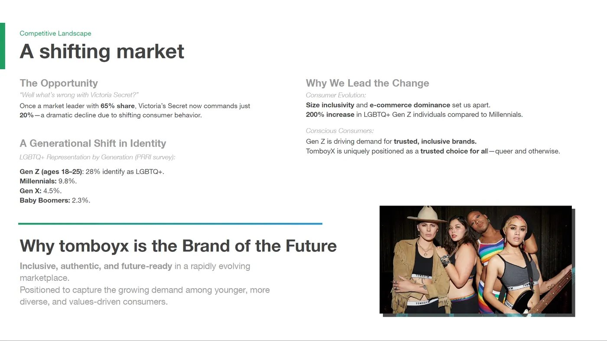
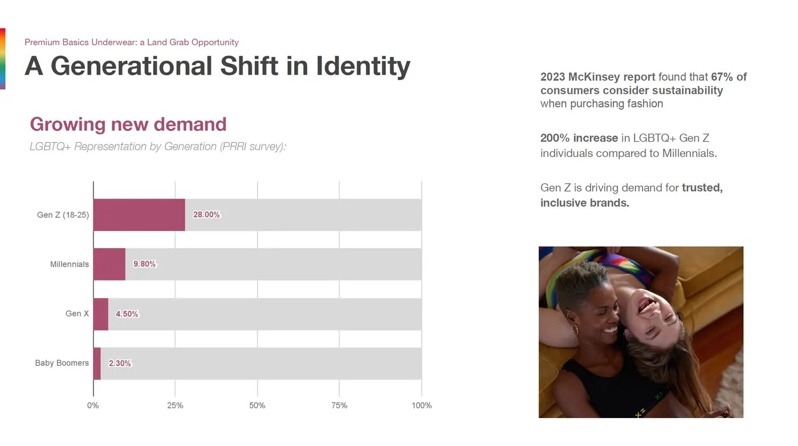
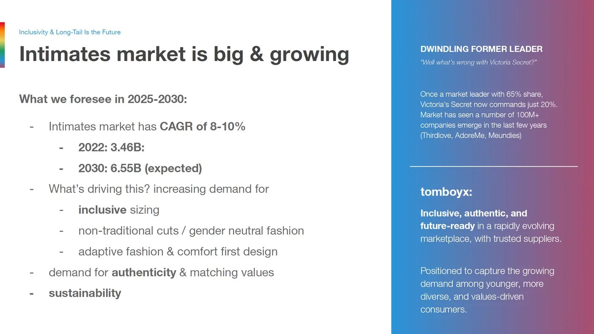

TomboyX, six spines
Four rooms, and the one thing only each of them saw
What each deck has that the other three do not


| The room | Came for | So only they saw |
|---|---|---|
| Early investors | The people. They knew the founders. | The company's own words, large: “Original Resolute Intimate Fearless Ready” |
| Values-driven investors | The world they want to put money behind. | People photographed the way they would want to be seen |
| Angels who have run companies | The engine. | Four numbers, each beside the one it beats |
| Syndicates | What is exceptional. | Invitations to customers' weddings |
Take those four slides away and the four decks are one company's same facts.
We find what each room came for, and put that part of the truth first.
The work deck; the four things are Kahran's own (connection, values, unit economics, the opportunity), from his talk of August 2025
The same fact, on two slides
One fact at a time, as it was drawn for one room and then for another



| The fact | Drawn for the values-driven | Drawn for the angels |
|---|---|---|
| A generation is changing who buys | A photograph and a line: “Why tomboyx is the Brand of the Future” | A bar for each generation: “A Generational Shift in Identity” |
| The old market leader is fading | One sentence in a paragraph | Its own column, in numbers: “Dwindling former leader” |
| The company's numbers are very good | One line of them, under the people | Four dials, each with the market beside it: “Best in class premium basics KPIs” |
For one room the people are told around the numbers. For the other the numbers are told around the people. Neither has a fact the other lacks.
We keep the facts fixed and move everything else.
The real slides; the last line is Kahran's way of putting it, in my words
The order of one look
What the eye meets first, second and third in the deck for the values-driven investors

| The eye meets | What it is | What it settles |
|---|---|---|
| First, a person | Photographed the way they would want to be seen: “Imagery nods to the female gaze in a deliberate repudiation of male gaze focused marketing.” | Whether this is their kind of company |
| Then, the company speaking | Its own words, unsoftened, signed off “Fit for You.” | Whether it means it |
| Only then, the market | The size of it, and who else has been funded | Whether it is also a good investment |
By the time the numbers arrive they are proof of something already felt.
We choose what is seen first for the person doing the seeing.
The work deck's page on the values-driven investors, and the real slides
Before the call, and on it
The deck for the syndicates, which is read by a screener before anyone gets to speak

| Before the call: read alone | On the call: with the leaders there | |
|---|---|---|
| Who is there | Someone screening, who will not decide | The people who decide, and the people who run the company |
| What has to work | The titles. Read only those and the pitch is still there: “Key highlights”, “Honored to have an extended family”, “Run by a strong team” | The team, in person |
| What it is for | “getting the company past screening rounds and in front of decision makers” | “bringing key leadership to be part of the pitch” |
The deck's job is to earn the call. The call is where the pitch happens.
We design for the reader the deck reaches after you have left.
The work deck's page on the syndicates
One slide, put in the deck where nobody expected it
A single slide: the invitations customers send the company
| The slide | “Honored to have an extended family”: invitations to weddings and graduations, posted to the office by customers. |
| Where you would expect it | In the deck for the people who already love the company. |
| Where it went | In the deck for the investors who came for a good company at a low price. |
| Why there | They value a company by its numbers. This is the one thing the numbers do not show, so it is shown to the people who would never go looking for it. |
Love stops being a nice ending and becomes part of what is being bought.
We treat affection as data, and show it like data.
Kahran's talk of August 2025 says which deck it went into and why, in my words; the slide is real
A round that fills, room by room
The raise itself, in the order the rooms were asked


| Asked | What the story had to do | The round after it |
|---|---|---|
| First: the early investors | Honour what they already felt, and blame no one | A little. The hardest ask of the four. |
| Second: the values-driven | Let them see they were among their own | About half |
| Third: the angels | Make an unfamiliar business readable | Most of it |
| Fourth: the syndicates | Get past the screening | Full |
Each version was written because the round was not yet full. The measure of each is what the next room started with.
We judge a story by what happens after it is told.
The order and how full the round was after each are from Kahran's talk of August 2025, in my words; no amounts are given here